7210B45 R.R. REAR WING FRAME
- Path
- Procedures > 72 PANELS AND FRAMES > 7210 REMOVING-REFITTING > 7210B STRUCTURAL ELEMENTS (CENTRE AND REAR SECTION) > 7210B45 R.R. REAR WING FRAME
- Kind
- repair procedure (removal / refitting; the operation number is the code)
- Applies to
- all engines; all production periods
- Interactive page
- https://sloeber94.github.io/elrnDB-fCrm/en/#/194001228
Applies to: all engines; all production periods
 Removing
Removing
 Refitting
RefittingOp. 7210B50 R.R. REAR WING LOWER FRAME
Op. 7210B75 R.R. REAR LIGHT CLUSTER HOUSING
Op. 7210E34 R.R. ROOF PANEL/SIDE PANEL CONNECTION PROFILE-MOULDING
- Check that the components connected are not distorted by checking the bodyshell alignment measurements using suitable equipment (gauges, templates or jigs).
- Straighten the body as necessary.
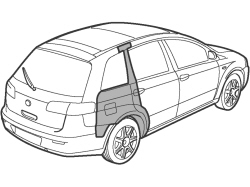
Applies to: all engines; all production periods
1. Use the hack saw following the cutting line in the diagram.
2. Use the drill and chamfer the welds not accessible with the chamfering machine.
- Use the hammer and chisel and remove the spot welds chamfered previously.
3. Remove the offcut from the vehicle.
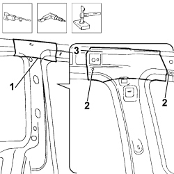
Applies to: all engines; all production periods
1. Use the hack saw following the cutting lines in the diagram.
- Remove the frame offcut, complete with reinforcement.
2. Use the hot air blower and wire brush to remove the underbody protection.
3. Use the rotary brush to clean the offcuts on the edges of the panel highlighting the welds.
4. Use the chamfering machine to remove the spot welds shown in the diagram.
- Use the hammer and chisel and remove the spot welds chamfered previously.
- Remove the offcuts from the vehicle.
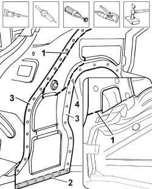
Applies to: all engines; all production periods
- Use the rotary brush to clean the offcuts on the edges of the panel highlighting the welds.
1. Use the chamfering machine to remove the spot welds shown in the diagram.
2. Use an oxyacetylene torch and a wire brush to remove the brazing shown in the diagram.
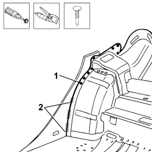
Applies to: all engines; all production periods
1. Use the hot air blower and wire brush to remove the underbody protection.
2. Use the hack saw following the cutting lines in the diagram.
3. Use the chamfering machine to remove the spot welds shown in the diagram.
- Use the hammer and chisel and remove the spot welds chamfered previously.
4. Remove the offcut from the vehicle.
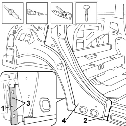
Applies to: all engines; all production periods
- Straighten the edges of the panel using a hammer and dolly block.
- Remove the spot weld residues using a disc grinder.
- Use a rotary brush to clean the areas treated previously.
1. Apply electro-galvanizing paint.
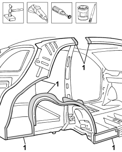
Applies to: all engines; all production periods
1. Use the hack saw and cut the replacement part at the point shown in the diagram remembering that a section of panel must be kept for overlapping.
2. Remove the anti-corrosion treatment using the rotary brush in the areas involved in the welding shown in the diagram on both the replacement frame and the reinforcement.
3. Make the holes shown using the drill.
- Apply electro-weldable paint to the edges treated previously.
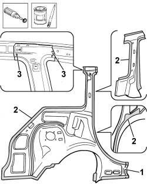
Applies to: all engines; all production periods
Refitting
Removing1. Position the replacement wing frame correctly, secure it using bolts and tack the reinforcement with a few spot welds.
2. Position the rear light cluster housing correctly and secure it with a few Parker bolts.
3. Position the rear wing lower frame correctly and secure it with a few Parker bolts.
4. Position the roof connector profile and the roof correctly and secure with a few Parker bolts.
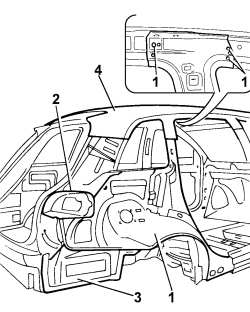
Applies to: all engines; all production periods
1. Position the rear wing correctly and secure with self-locking clamps and a few Parker bolts.
2. Fit the rear side door and the seal, check the alignment and the surrounding gaps, then remove the door.
- Remove the replacement parts fitted provisionally.
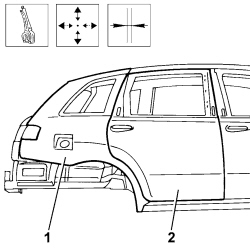
Applies to: all engines; all production periods
1. Use a MIG welder and fill weld the openings made previously.
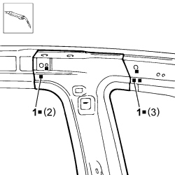
Applies to: all engines; all production periods
1. Use a spot welder in the areas shown in the diagram.
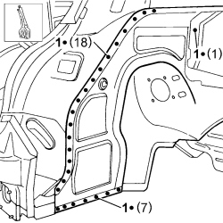
Applies to: all engines; all production periods
1. Use a spot welder in the areas shown in the diagram.
2. Use the oxyacetylene torch to braze at the points shown in the diagram.
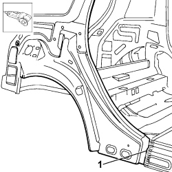
Applies to: all engines; all production periods
1. Use the hack saw on the panel along the join line to remove the excess parts.
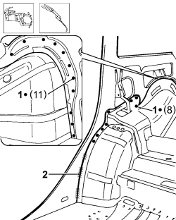
Applies to: all engines; all production periods
1. Use a MIG welder and seam weld in the area shown in the diagram.
2. Use a spot welder in the area shown in the diagram.
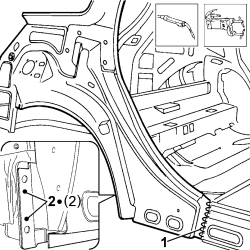
Applies to: all engines; all production periods
- Correct any distortions to the panel using a hammer and dolly block.
- Use a disc grinder to level the welding.
- Use a rotary brush to clean the areas welded previously.
1. Apply anti-oxidant protection to the areas involved in the welding.
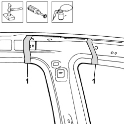
Applies to: all engines; all production periods
- Correct any distortions to the panel using a hammer and dolly block.
- Use a rotary brush to clean the areas welded previously.
1. Apply anti-oxidant protection to the areas involved in the welding.
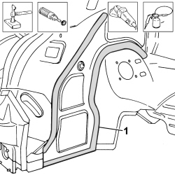
Applies to: all engines; all production periods
- Correct any distortions to the panel using a hammer and dolly block.
- Use a disc grinder to level the welding.
- Use a rotary brush to clean the areas welded previously.
1. Apply anti-oxidant protection to the areas involved in the welding.
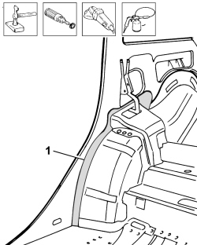
Applies to: all engines; all production periods
- Correct any distortions to the panel using a hammer and dolly block.
- Use a disc grinder to level the welding.
- Use a rotary brush to clean the areas welded previously.
1. Apply anti-oxidant protection to the areas involved in the welding.
- Seal the join lines between the replacement part and the vehicle.
- Apply underbody protection.
- Proceed with the painting stage.
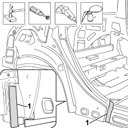
Applies to: all engines; all production periods
1. Apply the wax-based oil protection to the inside of the reinforcement and the frame.
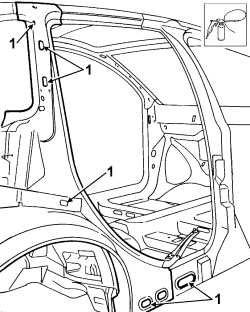
Applies to: all engines; all production periods
Op. 7210E34 R.R. ROOF PANEL/SIDE PANEL CONNECTION PROFILE-MOULDING
Topics linked from this page (5)
- 7210B50 R.R. REAR WING LOWER FRAME
- 7210B75 R.R. REAR LIGHT CLUSTER HOUSING
- 7210E28 R.R. ROOF PANEL
- 7210E34 R.R. ROOF PANEL/SIDE PANEL CONNECTION PROFILE-MOULDING
- 7210E52 R.R. REAR WING